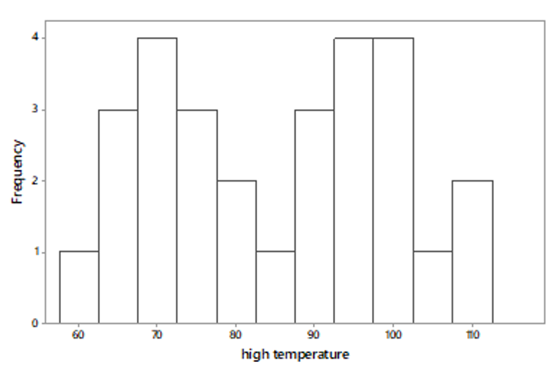

Quiz Debrief & Student Questions
Group Quiz 2 Debrief
- What is one way we can ensure “yes” has a smaller standard deviation than “no”?
What are the observational units? Think: what does one dot represent?
- Re-read the problem text: “Suppose that you re-create this study by interviewing faculty at your school, and suppose that your sample contains 8 people in each group (16 total)“
What are the variables?
General Tip: look at x- and y-axis, and any other way the visualization is broken down/split into categories. Be careful with histograms though - counts/frequencies aren’t variables.
Why aren’t “with children under 18” and “without children under 18” two variables?
Why is “# of children” incorrect?
Why is “# of people with children” incorrect?
General tip: an axis typically will only show 1 variable (not several), and if you see what you think is multiple variables on the same axis, it is likely multiple categories of 1 categorical variable:
What are the observational units in the boxplots above?
- “Data was collected on high temperatures for each day of the month during February and July in 4 different California cities”
What about California is causing the two peaks?

- Why is night vs. afternoon not a correct explanation here? Think: what are the observational units?
What are the observational units and variables in the above histogram?
Think: there are multiple numbers being plotted here. Where do those multiple numbers come from?
“The following graph displays high temperature data for cities around California on a particular day in July”
Recall classification of variables:
Numeric - can be discrete or continuous
Categorical - can be ordinal or not ordinal
Can’t have categorical - discrete, for example
Student Questions: